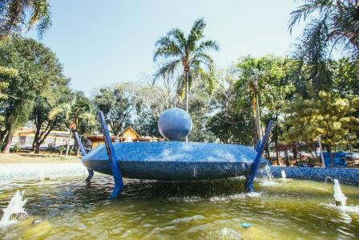
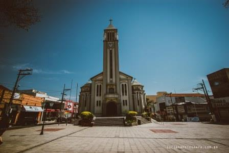
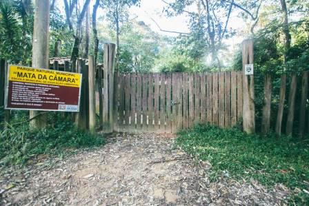
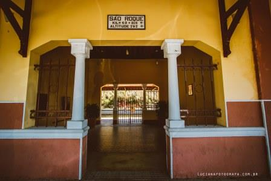
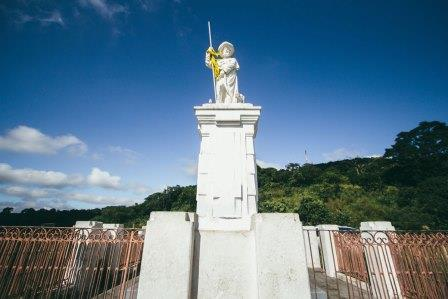
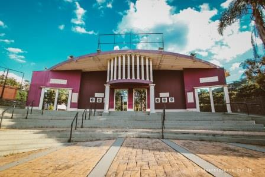
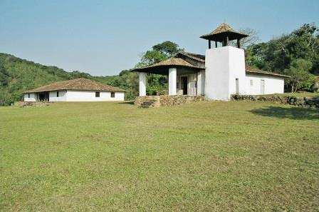
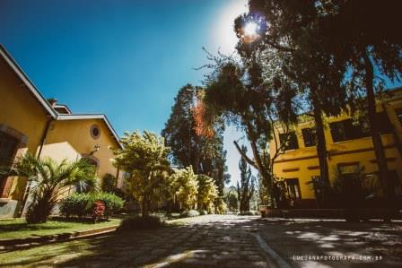
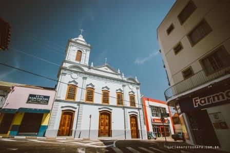

Home
Pontos Turísticos
Sobre

Praças

Igreja da Matriz
Morro do Saboó

Mata da Câmara

Estação Rodoviária

Morro do Cruzeiro

Recanto da Cascata

Sitio Santo Antônio

Centro Cultural Brasital

Igreja São Benedito